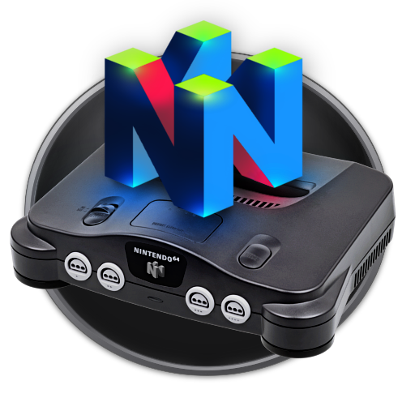
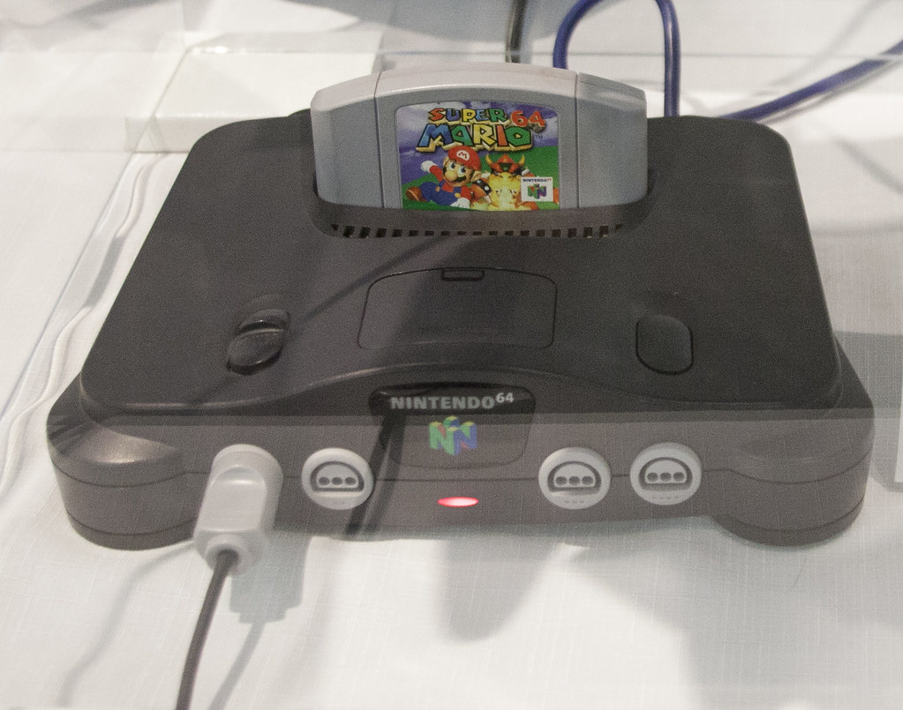

Bienvenido
Nintendo 64 fue la consola de cuarta generación de la compañía Nintendo. Lanzada al mercado en el ya lejano 1996, no llegaría a hasta 1997.
Sucesora de la exitosa Super Nintendo Entertainment System, con la expectativa de continuar con su legado, quedaría lejos de las cifras de venta que esta cosechó. Con 32.930.000 unidades vendidas quedaría lejos también de su rival directa la PlayStation de Sony.
Pero esto no es impedimento para que a día de hoy aún haya muchos que guarden grato recuerdo de ella, o incluso jueguen con ella de vez en cuando.
Con el deseo de organizar de forma estructurada el catálogo de esta consola así como convertirse en un sitio de noticias curiosas sobre esta nace esta web.
Si eres fan de la Nintendo 64, amante de lo retro, o simplemente un aficionado a los videojuegos, esta página es para ti.